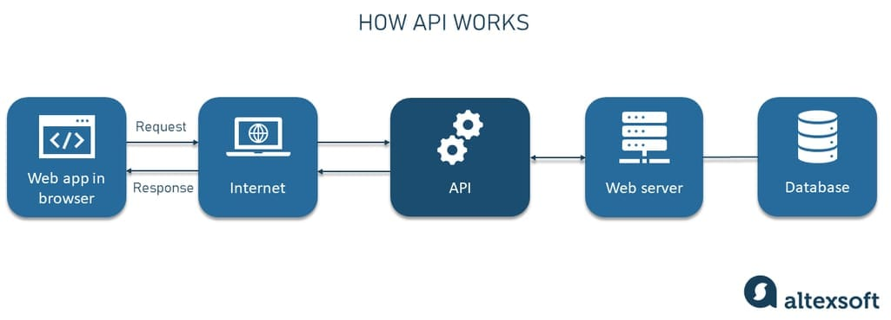
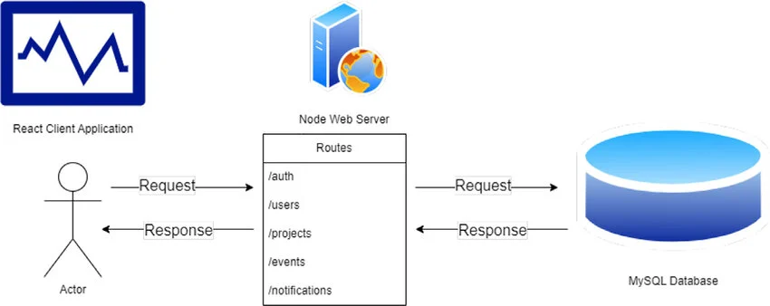

Introduction
APIs (Application Programming Interfaces) are the backbone of modern web applications. They allow different systems to communicate with each other and share data seamlessly.
What is an API?
An API acts like a bridge between two applications. It allows one application to request data or services from another without needing to understand how it works internally.

How APIs Work
APIs work through requests and responses. A client (like a website or app) sends a request to a server, and the server responds with the requested data, usually in JSON format.
- Client: The application making the request
- Server: The system providing data
- Request: Asking for data
- Response: Returning the data
Types of APIs
There are different types of APIs used in development:
- REST APIs – Most common, use HTTP methods
- SOAP APIs – More structured and secure
- GraphQL – Flexible and efficient querying

Why APIs are Important
APIs allow developers to use external services without building everything from scratch. For example, you can use APIs for payments, weather data, authentication, and more.
Simple Example
Imagine you want to display weather data on your website. Instead of creating your own weather system, you can use a weather API to fetch real-time data and display it instantly.
"APIs connect the digital world, enabling powerful integrations."
Conclusion
Understanding APIs is essential for modern web development. Once you learn how to use them, you can build more dynamic and powerful applications by integrating different services.
← Back to Blogs